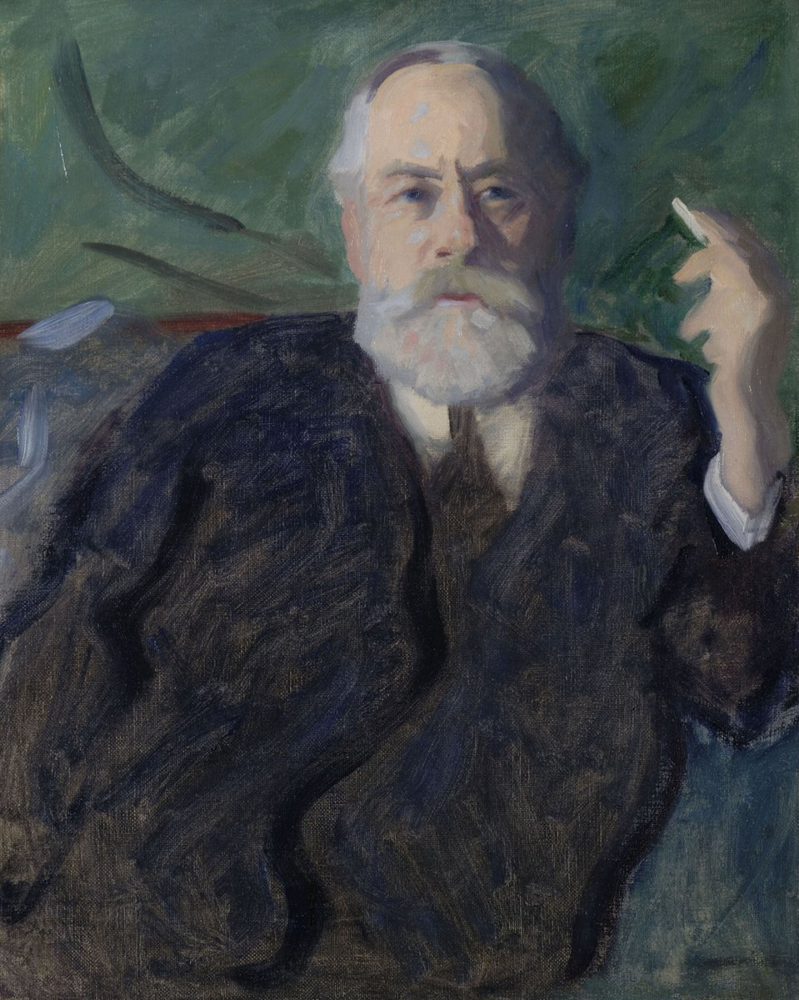
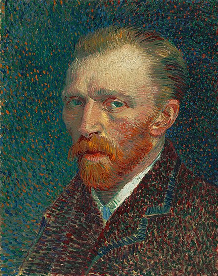
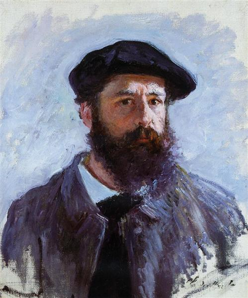

Szinyei Merse Pál
Szinyeiről előszőr egy regényben olvastam. Azonnal beleszerettem a műveibe. A kedvenc festményem tőle a Majális. Tudom, elég basic kedvenc, de tényleg olyan érdekes, milyen sok rejtett jelentés és történet van egy-egy festmény mögött.
Szinyei Merse Pál, magyar festőművész 1845. júliusában született és 74 évesen hunyt el 1920 februárjában. Nemesi családból származott. Családjában alap volt az irodalom, zene és képzőművészetek gyakorlása. Sohase volt megélhetési gondja, ez a művészeknél egész ritka.
Eleinte vallásos iskolába járt, de innen politikai okok miatt kirúgták, így magántanuló lett. De később sikerült egy vizsga által vissza iratkoznia egy gimmnáziumba. Ekkor már igazán érdekelte a képzőművészet. Több mint három évnyi próbálkozás után felvették egy művész mesterhez. Művészeti iskolában tanult egészen 1869-ig.
Ezután kezdett el önállóan alkotni. Megannyi híres, ikonikus festményt készített élete során.
|

Vincent van Gogh
Vincent van Goghnak rengeteg, de tényleg rengeteg olyan műve van, ami nagyon népszerű a pop-kultúrában. Én személyesen úgy ismertem meg Van Gogh festményeit, hogy a nagypapám fürdőszobájának ajtaján egy felsorolás van Van Gogh leghíresebb alkotásairól (persze képekkel kiegészítve). Nagyon megtetszett a stílusa, az ecset használata. Illetve az ő képeinek segítségével tanultam sokat a színelméletről, a koncepcióról és sok más fontos festészeti technikáról.
Vincent van Gogh 1853 márciusában, Hollandiában született. Komoly depresszióban szenvedett, így Franciaországban, 37 évesen 1890-ben megölte magát. Van Gogh posztimpresszionsita festő volt. Dinamikus szín- és ecsethasználatáról ismert.
Már gyerekkorában is szeretett rajzolni. Eleinte műkereskedőként dolgozott. Miután előjött a depressziója, Londonból visszaköltözött szülővárosába és családjával élt. 1881-ben kezdett el komolyabban festeni. Testvére és jó barátja, Theo pénzügyileg és lelkileg is támogatta. Sokat leveleztek, ezek egy része megtekinthető az Amszterdamban található Van Gogh múzeumban. (Ebben a múzeumban én is jártam, azóta még inkább kedvelem a műveit.)
Depressziója egyik oka az is volt, hogy egész életében anyagilag sikertelen volt mint festő. Azt gondolták, félnótás. Csak öngyilkossága után nyílt fel az emberek szeme, és jöttek rá, milyen félreértett és zseniális művész volt.
|

Claude Monet
Habár jó sok képét ismertem Claude Monet-nak, csak nem rég kezdtem el igazán érdeklődni a művei iránt. Múlt hónapban találtam az egyik könyvespolcunkon egy ismeretterjesztő kötetet Monet munkásságáról. A könyv annyira érdekes volt, hogy teljesen beleszerettem tőle Monet műveibe. Igazán inspirálóak a festő képei és a könyv írásai.
Teljes nevén Oscar-Claude Monet Párizsban született 1840 novemberében. Egész idősen, 86 évesen, 1926-ban hunyt el. Az impresszionizmus bevezetéséről ismert. Gyönyörű tájképei nagyon híresek. Ezeknek egy részét helyben, a szabadban festette meg, míg másokat gyors tanulmányok, jegyzetek és vázlatok alapján készített el.
Gyerekkora óta imádott a szabadban rajzolni. Anyukája támogatta abban, hogy festő legyen, de apja nagyon elítélte. Anyukája sajnos Monet 16 éves korában elhunyt. Ezután nem sokkal elköltözött gazdag nénikéjéhez. Ekkor kezdett el művésziskolában tanulni. Ekkor készült tenger- és tájképei alig kaptak figyelmet. Barátja, Eugéne Boudin mutatta be neki a "plein air" festészetet, avagy a szabadban festést. 1883-tól Giverny-ben élt és alkotott, itt is hunyt el.
|